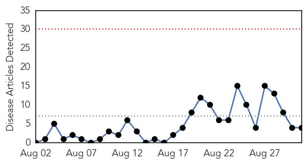
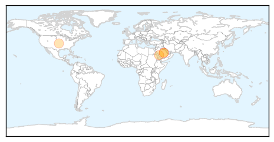
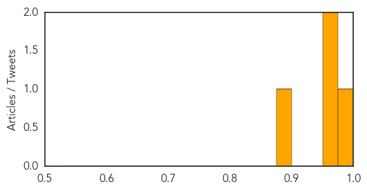
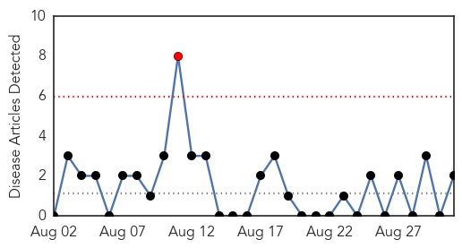
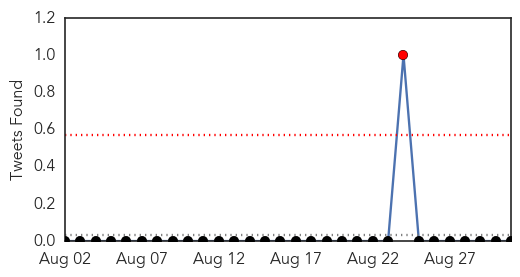
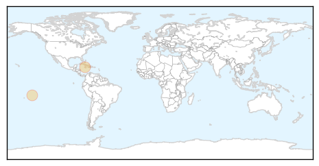

MERS
30-Day Web Trend
0 alerts, 0 warnings

30-Day Twitter Trend
6 alerts, 7 warnings

Article Locations
Article Confidences
Top Articles:
Top Tweets:
- 0.646
- AFD Blog `Saudi MOH: Riyadh Adds 6 More MERS Cases' MERS-CoV http://t.co/rBfYd3utZx
- 0.632
- AFD blog `Saudi MOH Statement On Past Week’s Riyadh MERS Outbreak' MERS-CoV http://t.co/qPvU3cweG0
Chikungunya
30-Day Web Trend
1 alerts, 0 warnings

30-Day Twitter Trend
3 alerts, 0 warnings

Article Locations
Article Confidences

Top Articles:
Top Tweets:
-
No tweets found for Aug 31, 2015